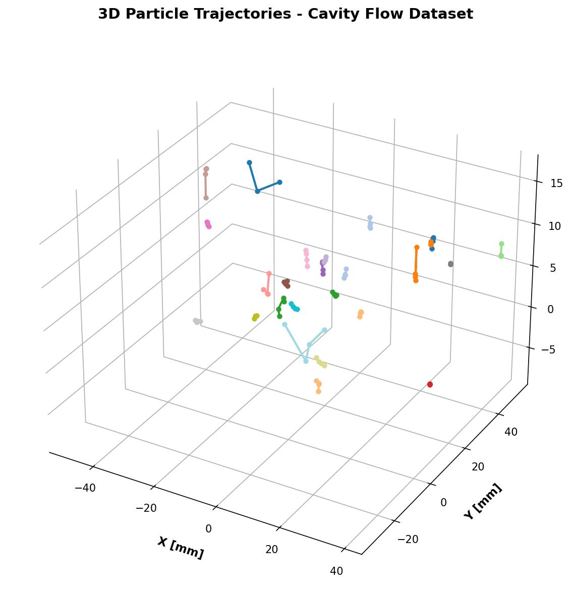

Tutorial: Your First Tracking (GUI, 10 minutes)¶
Track real particles in 3D using the example bundled with openptv2. No data to download, no parameters to change.
You will: open the test_cavity example, detect particles, match them
across 4 cameras, track them over time, and see the trajectories.
Before you start¶
- openptv2 installed with the GUI:
- A checkout of the openptv2 repository (the example lives in
test_data/test_cavity). If you installed from PyPI without the source, clone it:
Step 1: Open the example¶
The GUI opens showing 4 camera views of a lid-driven cavity experiment (frames 10000–10004).
Step 2: Load parameters — Start → Init / Reload¶
Click Start → Init / Reload in the menu bar.
Success looks like this in the console:
The 4 camera views now show the first frame. If you see this message, everything else in this tutorial will work.
Step 3: Detect particles — Preprocess → Image coord¶
Click Preprocess → Image coord.
The console prints:
Each camera view fills with blue crosses — one per detected particle (several hundred per camera). This is 2D detection: finding bright spots in each image.
Step 4: Match across cameras — Preprocess → Correspondences¶
Click Preprocess → Correspondences.
The console prints:
New crosses appear in yellow (seen in 2 cameras), green (3 cameras), and red (all 4 cameras). This is stereo matching: the same physical particle found in multiple views is triangulated into a 3D position.
Step 5: Process all frames — Sequence → Sequence without display¶
Click Sequence → Sequence without display.
This repeats Steps 3–4 for every frame (10000–10004). It takes under a
minute. Results are saved to test_data/test_cavity/res/ as rt_is.*
files (one per frame, 3D positions).
Step 6: Track over time — Tracking → Tracking without display¶
Click Tracking → Tracking without display.
The console prints:
Particles are now linked frame-to-frame into trajectories, saved as
res/ptv_is.* files. Expect a few hundred trajectories over these frames.
Step 7: See the trajectories — Tracking → Show trajectories¶
Click Tracking → Show trajectories to plot the 3D paths.

You just ran a full 3D-PTV pipeline: detect → match → track → visualize.
If something goes wrong¶
| Symptom | Fix |
|---|---|
GUI fails with No module named 'traitsui' |
You installed without the GUI extra. Run pip install "openptv2[gui]". |
Init / Reload reports a missing image |
Check you launched from the repository root so relative paths in the YAML resolve. |
| No crosses after Image coord | The example threshold is pre-tuned; make sure Step 2 succeeded first. |
Same run without the GUI¶
Every click above has a command-line equivalent (useful on servers). From the repository root:
# Steps 3–5 (detection + correspondences, all frames)
pyptv_batch --workdir=test_data/test_cavity --first=10000 --last=10001 --mode=sequence
# Step 6 (tracking)
pyptv_batch --workdir=test_data/test_cavity --first=10000 --last=10001 --mode=tracking
Where to go next¶
- Tracking Pipeline & Results — what each step does and where result files land.
- Command-Line Batch Processing — headless runs on your own data.
- Plate Calibration How-To — calibrating your own cameras (only needed for new experiments, not this example).
- Lid-Driven Cavity Flow — the advanced, scripted version of this example (autocalibration, self-calibration, warmup).